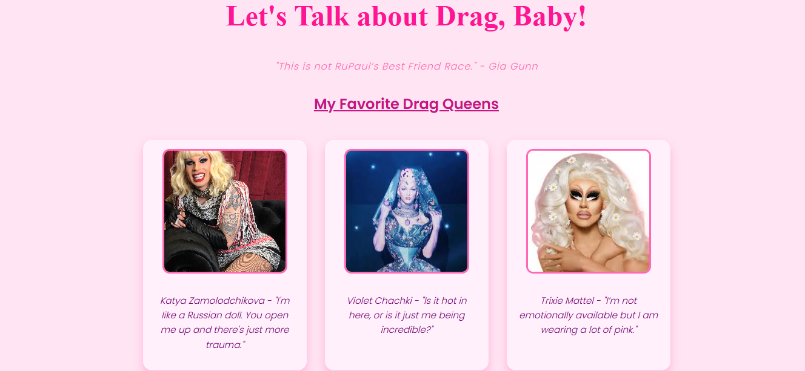
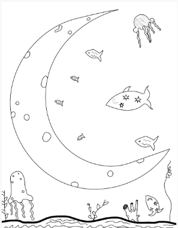
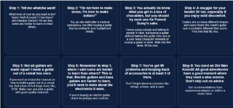
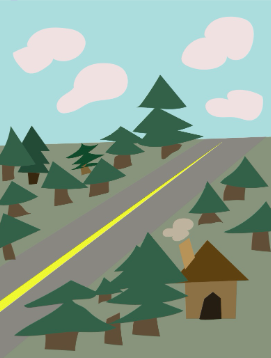
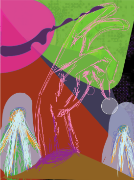

What’s more chaotic and iconic than a good old ‘RuPaul’s Drag Race’ Episode? Was this Web Design assignment created when I was severely sleep deprived and over caffeinated? Yes. Does that change the fact that I worked hard on it? No.

Here is an example of freehand sketching and experimentation of different brush settings. I enjoyed experimenting with differing sizes, and this was one of my first times filling up an entire canvas with simple sketches to make an original scene.

As a portion of my artistic journey through web design, I have created quizzes and instructional manuals to showcase my understanding of web design, and fun techniques I played with when creating websites. This work was a study on symmetry and organization, aiming to demonstrate how spacing, coloring, and text formatting can greatly affect how users interact with web works.

I created this work on an iPad, while in the infusion room at Bozeman Deaconess, waiting for my father to finish cancer treatments. When I look at it in the sense of artistry, I usually cringe, because of how elementary it looks. Then, I am reminded of how I was sitting on the hospital floor, criss cross applesauce, waiting for my Dad. There is a sense of sadness behind this work. I was a full grown adult, with nothing to do for my father other than wait and draw - reminiscent of being a child.

I created this work for an assignment, yes, but most of all, I created this work to showcase my love for horror movies. I was still experimenting with random illustrative tools, trying my best to find the best tool or application to work with, without spending hundreds of dollars a year on a subscription I would barely use. In this work, I used the free-est of free tools I have - the ‘markup’ option on my phone. That also leads to why this is my favorite. The simplest answer was the best.